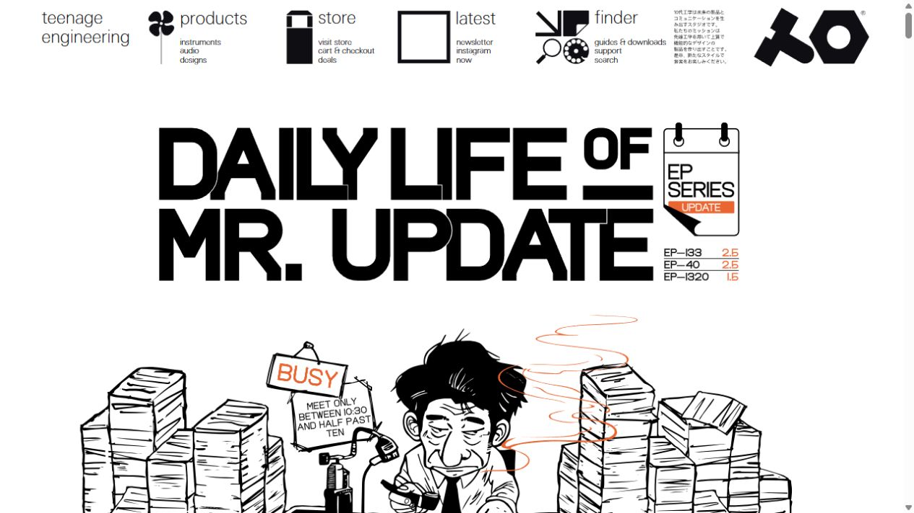
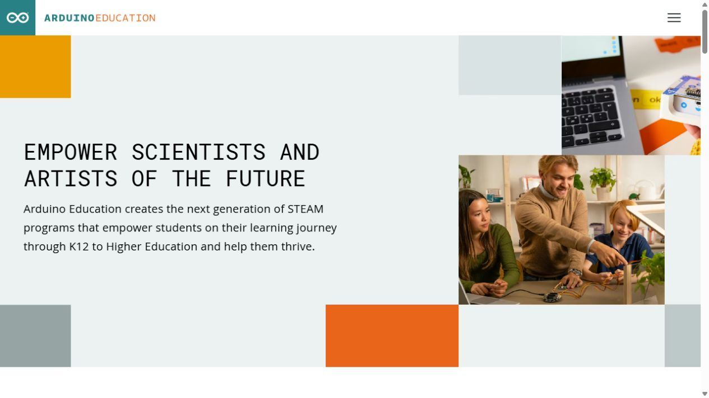
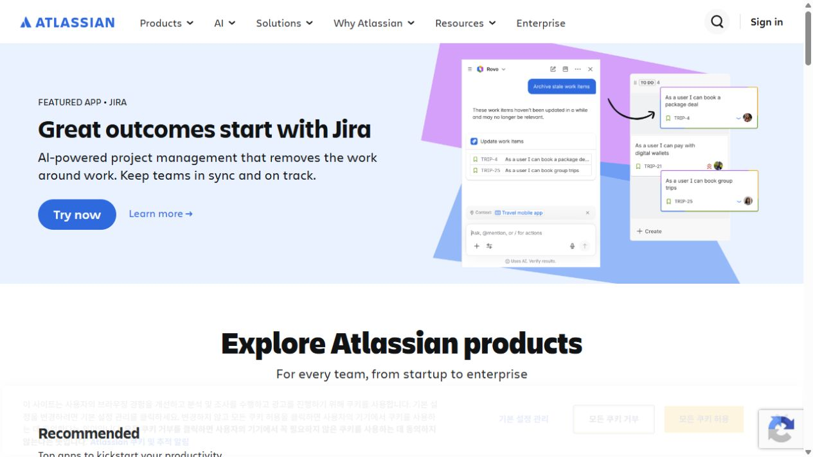
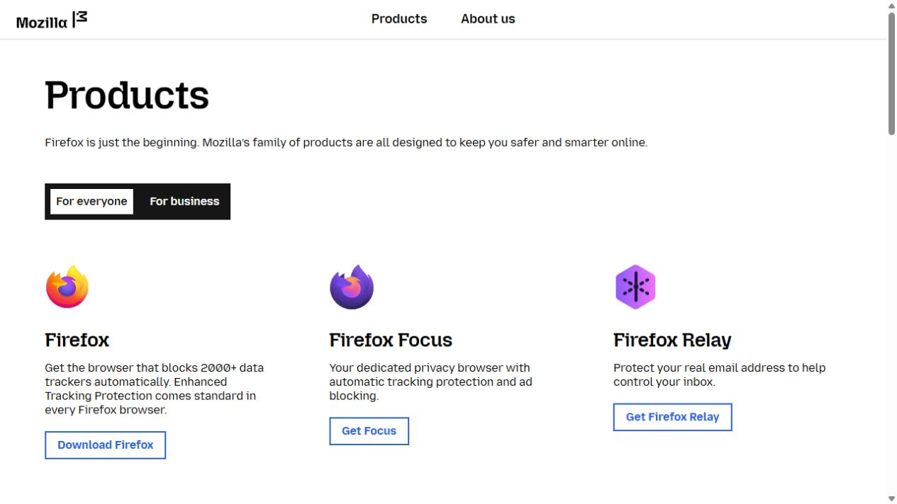
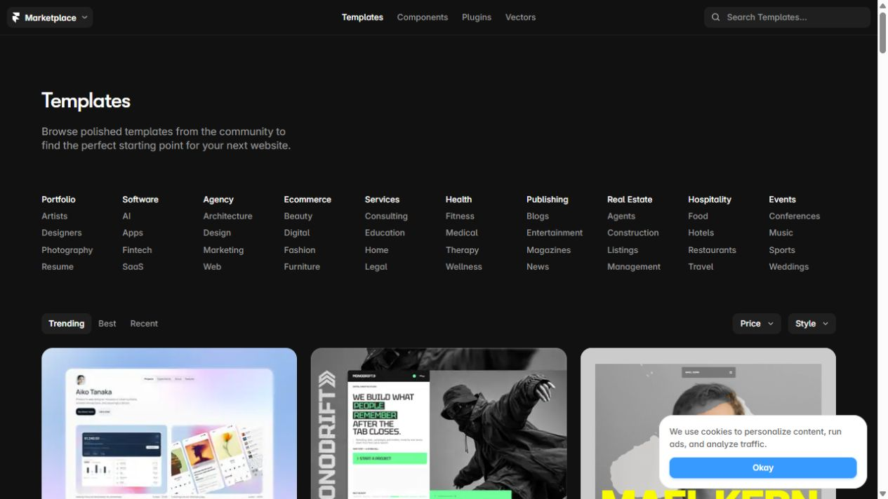
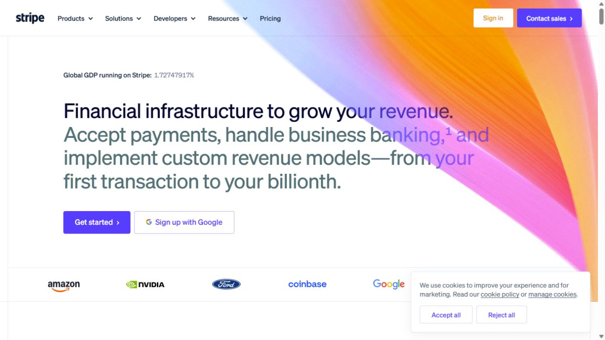

01 / 제품마다 다른 개성Panic ↗앱·게임·기기를 함께 소개하는 브랜드 허브. 대표작의 세계관을 크게 보여주고 제품군별로 연결합니다.코들에 참고: 플랫폼과 캠프를 같은 틀에 넣지 않고 각각의 성격을 살리는 방식.
02 / 강한 그래픽과 편집Teenage Engineering ↗음악 기기 제품군을 캠페인 그래픽과 함께 소개합니다. 굵은 글자와 독특한 그래픽이 강한 인상을 만듭니다.코들에 참고: 한 가지 대표 콘텐츠를 포스터처럼 완성도 있게 보여주는 첫 화면.
03 / 교육 상품과 대상별 구성Arduino Education ↗교육용 솔루션을 K–12, 고등교육, 산업 준비 과정으로 연결합니다. 수업 사진과 교육 도구가 함께 등장합니다.코들에 참고: 서비스 이름 외에 학년과 교육 목적을 기준으로 들어가는 경로.
04 / 추천 상품 → 목적별 탐색Atlassian Products ↗대표 제품, 추천 앱, 제품 묶음, 역할별 탐색을 순서대로 제공합니다.코들에 참고: 처음 온 교사에게 먼저 보여줄 상품과 전체 상품 목록의 위계.
05 / 간결한 서비스 디렉터리Mozilla Products ↗개인용과 비즈니스용으로 나누고 로고·짧은 설명·바로가기로 제품을 소개합니다.코들에 참고: 작은 화면에서도 서비스 차이를 빠르게 비교하는 구성. 시각적 화려함보다는 명료함 참고.
06 / 썸네일 중심 탐색Framer Marketplace ↗템플릿을 분야와 스타일로 탐색하는 콘텐츠 허브입니다. 검색, 카테고리, 큰 미리보기 이미지가 중심입니다.코들에 참고: 콘텐츠와 수업 사례를 둘러보는 구간. 다섯 서비스의 메인 구조보다는 하위 탐색에 적합.
07 / 여러 제품을 하나의 이야기로Stripe ↗결제와 금융 관련 제품들을 하나의 사업 목적 아래 소개합니다. 첫 화면의 색과 글자 대비가 뚜렷합니다.코들에 참고: 서비스 목록을 먼저 나열하기보다 수업 준비→실습→결과로 연결하는 설명 방식.
공식 사이트에서 구성 살펴보기 ↗08 / 목적에서 제품으로Adobe Creative Cloud ↗사진·디자인·영상 등 만들려는 결과에서 관련 앱으로 이어집니다.코들에 참고: AI 수업을 하고 싶다 / 캠프를 열고 싶다 같은 목적별 진입.
공식 사이트에서 구성 살펴보기 ↗09 / 물리적 제품 카탈로그Nothing — All Products ↗휴대폰·오디오·액세서리 등 전체 상품을 모은 카탈로그. 지역에 따라 이동하는 페이지가 달라질 수 있습니다.코들에 참고: 서비스별 대표 이미지와 이름만으로 선택할 수 있는 간결한 상품 진열.
공식 사이트에서 구성 살펴보기 ↗10 / 제품·소식·커뮤니티 연결Raspberry Pi ↗제품 소개에서 소식, 행사, 재단으로 연결되는 브랜드 생태계 허브.코들에 참고: 다섯 서비스 아래에 교육 사례와 소식을 연결하는 확장 구조.
공식 사이트에서 구성 살펴보기 ↗11 / 필터 중심의 제품 목록Autodesk Products ↗여러 소프트웨어를 모아 비교하고 구매하는 공식 제품 카탈로그.코들에 참고: 상품이 많아졌을 때의 분류와 비교. 지금 규모에서는 보조 레퍼런스.
공식 사이트에서 구성 살펴보기 ↗12 / 활용 사례를 찾는 허브Notion Marketplace ↗템플릿과 제작자를 중심으로 필요한 활용 사례를 탐색하는 마켓플레이스.코들에 참고: 교사들이 수업 자료와 사례를 찾아보는 콘텐츠 허브.